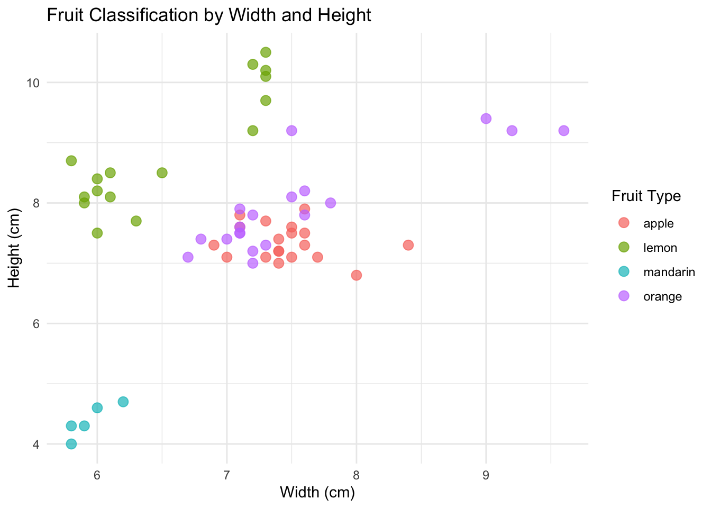
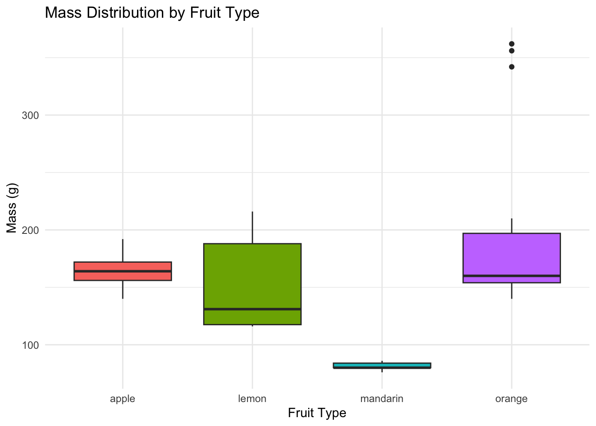
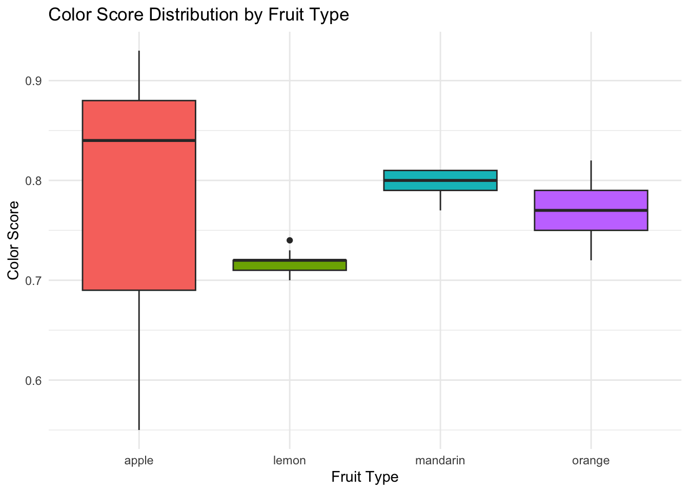
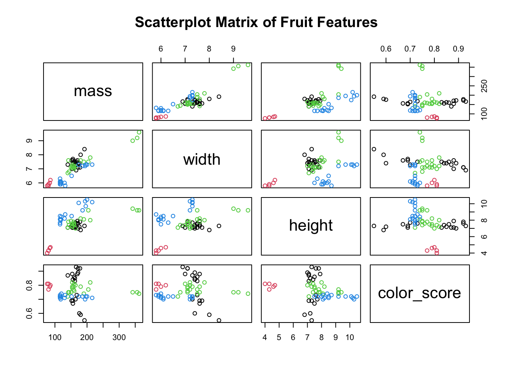
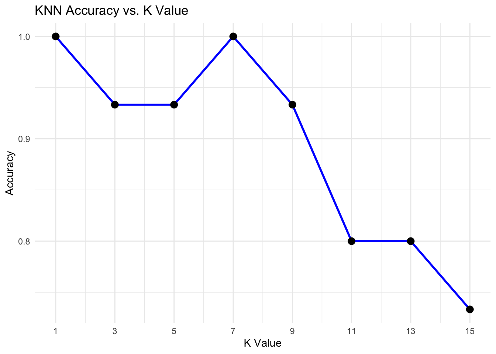
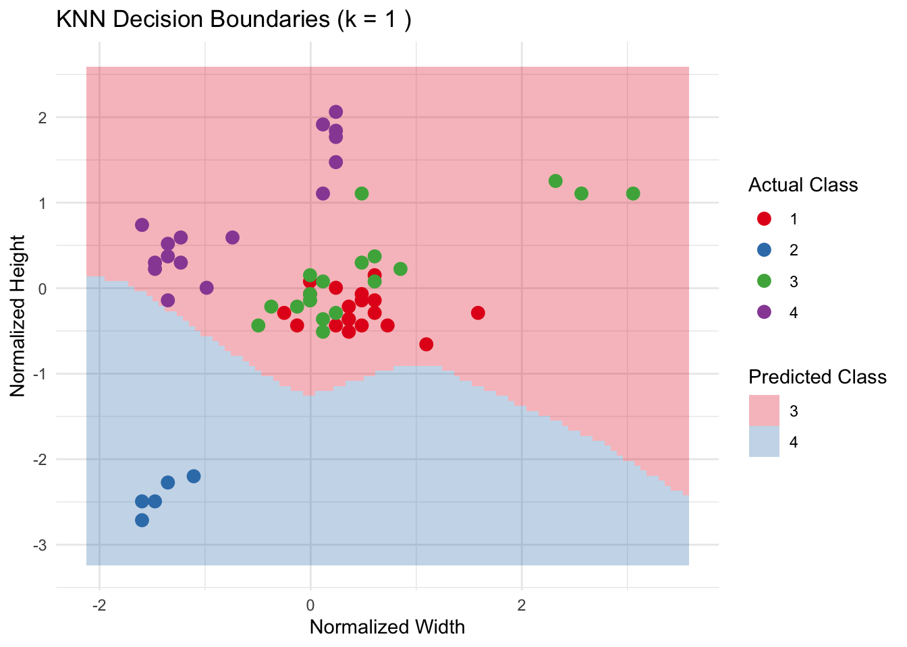
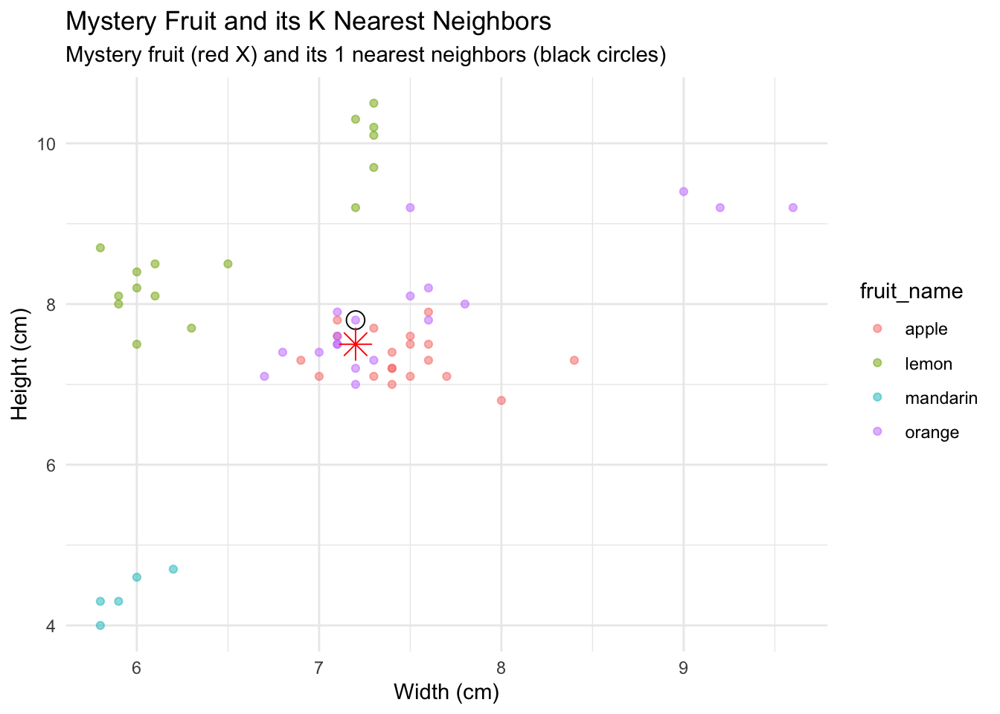
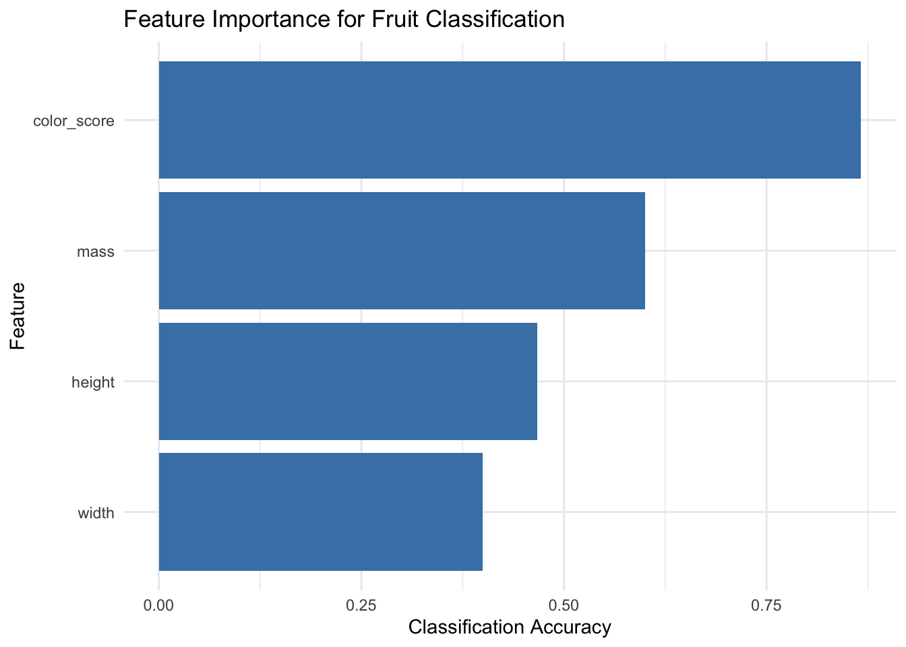

fruit_label fruit_name fruit_subtype mass
Min. :1.000 Length:59 Length:59 Min. : 76.0
1st Qu.:1.000 Class :character Class :character 1st Qu.:140.0
Median :3.000 Mode :character Mode :character Median :158.0
Mean :2.542 Mean :163.1
3rd Qu.:4.000 3rd Qu.:177.0
Max. :4.000 Max. :362.0
width height color_score
Min. :5.800 Min. : 4.000 Min. :0.5500
1st Qu.:6.600 1st Qu.: 7.200 1st Qu.:0.7200
Median :7.200 Median : 7.600 Median :0.7500
Mean :7.105 Mean : 7.693 Mean :0.7629
3rd Qu.:7.500 3rd Qu.: 8.200 3rd Qu.:0.8100
Max. :9.600 Max. :10.500 Max. :0.9300
# Convert fruit_label and fruit_name to factorsfruit_data$fruit_label <-as.factor(fruit_data$fruit_label)fruit_data$fruit_name <-as.factor(fruit_data$fruit_name)# Basic visualizationggplot(fruit_data, aes(x = width, y = height, color = fruit_name)) +geom_point(size =3, alpha =0.7) +labs(title ="Fruit Classification by Width and Height",x ="Width (cm)", y ="Height (cm)", color ="Fruit Type") +theme_minimal()

# feature explorationggplot(fruit_data, aes(x = fruit_name, y = mass, fill = fruit_name)) +geom_boxplot() +labs(title ="Mass Distribution by Fruit Type",x ="Fruit Type", y ="Mass (g)") +theme_minimal() +theme(legend.position ="none")

ggplot(fruit_data, aes(x = fruit_name, y = color_score, fill = fruit_name)) +geom_boxplot() +labs(title ="Color Score Distribution by Fruit Type",x ="Fruit Type", y ="Color Score") +theme_minimal() +theme(legend.position ="none")

# pairs plotpairs(fruit_data[, 4:7], col = fruit_data$fruit_label, main ="Scatterplot Matrix of Fruit Features")

Prepare data for KNN
# Select features for the modelfeatures <- fruit_data[, c("mass", "width", "height", "color_score")]# Normalize the features (important for KNN)preproc <-preProcess(features, method =c("center", "scale"))features_normalized <-predict(preproc, features)# Split the data into training and testing sets (70% train, 30% test)set.seed(123) # For reproducibilitytrainIndex <-createDataPartition(fruit_data$fruit_label, p =0.7, list =FALSE)train_features <- features_normalized[trainIndex, ]test_features <- features_normalized[-trainIndex, ]train_labels <- fruit_data$fruit_label[trainIndex]test_labels <- fruit_data$fruit_label[-trainIndex]# Function to evaluate KNN with different k valuesevaluate_knn <-function(k_values) { accuracy_results <-numeric(length(k_values))for (i inseq_along(k_values)) { k <- k_values[i] knn_pred <-knn(train = train_features, test = test_features, cl = train_labels, k = k) cm <-confusionMatrix(knn_pred, test_labels) accuracy_results[i] <- cm$overall["Accuracy"] } results_df <-data.frame(k = k_values, accuracy = accuracy_results)return(results_df)}# Test different k valuesk_values <-c(1, 3, 5, 7, 9, 11, 13, 15)accuracy_df <-evaluate_knn(k_values)# Plot accuracy vs kggplot(accuracy_df, aes(x = k, y = accuracy)) +geom_line(color ="blue", size =1) +geom_point(size =3) +labs(title ="KNN Accuracy vs. K Value",x ="K Value", y ="Accuracy") +theme_minimal() +scale_x_continuous(breaks = k_values)
Warning: Using `size` aesthetic for lines was deprecated in ggplot2 3.4.0.
ℹ Please use `linewidth` instead.

# Find the best k valuebest_k <- accuracy_df$k[which.max(accuracy_df$accuracy)]cat("Best k value:", best_k, "with accuracy:", max(accuracy_df$accuracy), "\n")
Best k value: 1 with accuracy: 1
# Final model with the best kfinal_knn_pred <-knn(train = train_features, test = test_features, cl = train_labels, k = best_k)# Confusion matrixconf_matrix <-confusionMatrix(final_knn_pred, test_labels)print(conf_matrix)
# Create a grid for predictiongrid_resolution <-100x_range <-seq(min(features_normalized$width) -0.5, max(features_normalized$width) +0.5, length.out = grid_resolution)y_range <-seq(min(features_normalized$height) -0.5, max(features_normalized$height) +0.5, length.out = grid_resolution)grid <-expand.grid(width = x_range, height = y_range, mass =0, color_score =0) # Set other features to their mean (0 after normalization)# Predict classes for grid pointsgrid_pred <-knn(train = train_features, test = grid, cl = train_labels, k = best_k)# Visualize decision boundariesprediction_df <-cbind(grid, predicted =as.numeric(grid_pred))ggplot() +geom_tile(data = prediction_df, aes(x = width, y = height, fill =as.factor(predicted)),alpha =0.3) +geom_point(data =cbind(features_normalized, label = fruit_data$fruit_label),aes(x = width, y = height, color = label),size =3) +labs(title =paste("KNN Decision Boundaries (k =", best_k, ")"),x ="Normalized Width", y ="Normalized Height",fill ="Predicted Class", color ="Actual Class") +theme_minimal() +scale_fill_brewer(palette ="Set1") +scale_color_brewer(palette ="Set1")

Testing “mystery fruit”
new_fruit <-data.frame(mass =160,width =7.2,height =7.5,color_score =0.76)# Normalize the new data using the same preprocessingnew_fruit_norm <-predict(preproc, new_fruit)# Predict using our KNN modelprediction <-knn(train = train_features, test = new_fruit_norm, cl = train_labels, k = best_k,prob =TRUE)# Get the predicted class and confidencepredicted_class <-levels(fruit_data$fruit_name)[as.numeric(prediction)]confidence <-attr(prediction, "prob")cat("Mystery fruit prediction:\n")
Mystery fruit prediction:
cat("Predicted fruit type:", predicted_class, "\n")
Predicted fruit type: mandarin
cat("Confidence:", confidence, "\n")
Confidence: 1
# Get the actual k nearest neighbors for visualizationdistances <-apply(train_features, 1, function(x) sqrt(sum((x -as.numeric(new_fruit_norm))^2)))neighbors_idx <-order(distances)[1:best_k]cat("\nThe", best_k, "nearest neighbors are:\n")
# Visualize the mystery fruit with its neighborsmystery_fruit_plot <-ggplot() +geom_point(data = fruit_data, aes(x = width, y = height, color = fruit_name),alpha =0.5) +geom_point(data = fruit_data[trainIndex[neighbors_idx], ],aes(x = width, y = height),color ="black", size =4, shape =21) +geom_point(data = new_fruit,aes(x = width, y = height),color ="red", size =5, shape =8) +labs(title ="Mystery Fruit and its K Nearest Neighbors",subtitle =paste("Mystery fruit (red X) and its", best_k, "nearest neighbors (black circles)"),x ="Width (cm)", y ="Height (cm)") +theme_minimal()print(mystery_fruit_plot)

Feature Importance Analysis
# Let's see which features are most important for classificationfeature_importance <-data.frame(feature =names(features))feature_importance$importance <-0# A simple feature importance measure based on classification accuracy# when using only that single featurefor (i inseq_along(names(features))) { feature_name <-names(features)[i] single_feature <- features_normalized[, feature_name, drop =FALSE] single_train <- single_feature[trainIndex, , drop =FALSE] single_test <- single_feature[-trainIndex, , drop =FALSE] knn_pred <-knn(train = single_train, test = single_test, cl = train_labels, k = best_k) feature_importance$importance[i] <-sum(knn_pred == test_labels) /length(test_labels)}# Sort by importancefeature_importance <- feature_importance[order(-feature_importance$importance), ]# Plot feature importanceggplot(feature_importance, aes(x =reorder(feature, importance), y = importance)) +geom_bar(stat ="identity", fill ="steelblue") +labs(title ="Feature Importance for Fruit Classification",x ="Feature", y ="Classification Accuracy") +coord_flip() +theme_minimal()

Conclusion
cat("\n--- Summary of KNN Analysis for Fruit Classification ---\n")
--- Summary of KNN Analysis for Fruit Classification ---
cat("Total number of samples:", nrow(fruit_data), "\n")
Total number of samples: 59
cat("Number of fruit types:", length(unique(fruit_data$fruit_name)), "\n")